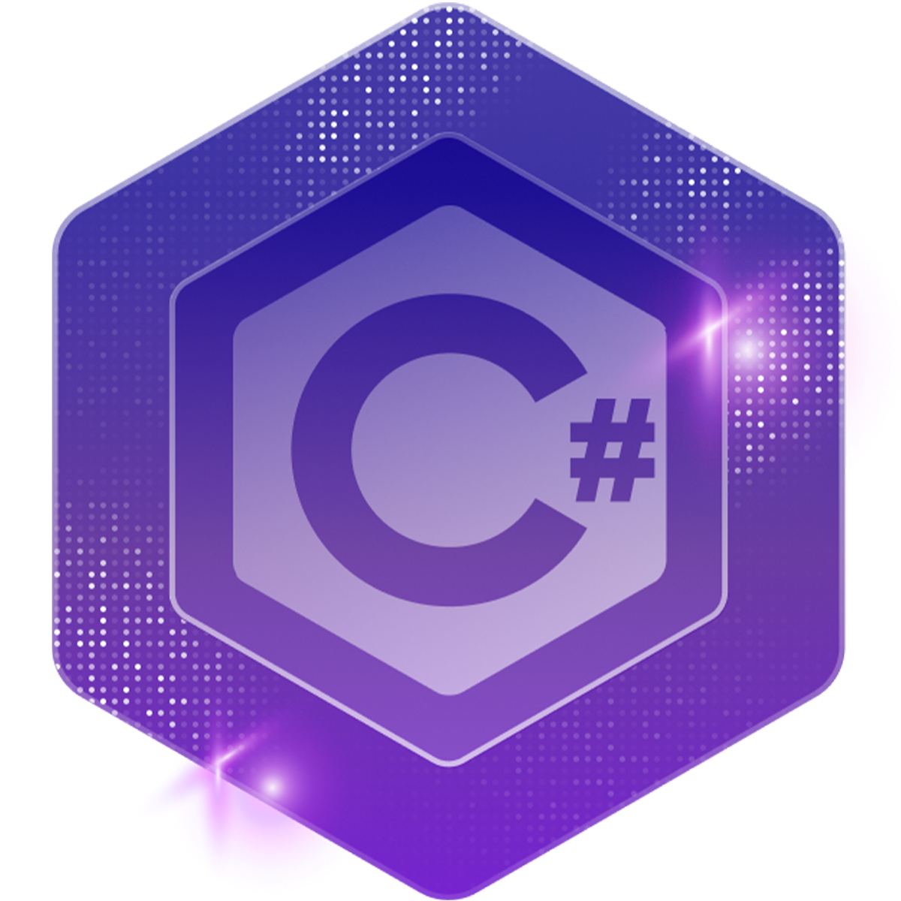

View CertificateC# MasterCourse
A comprehensive, extended course focused on building strong, real-world C# development skills. The course covered core and advanced topics such as object-oriented programming, ASP.NET Core, Blazor, LINQ, and debugging best practices, emphasizing practical, professional-grade coding techniques that improve code quality, efficiency, and maintainability.